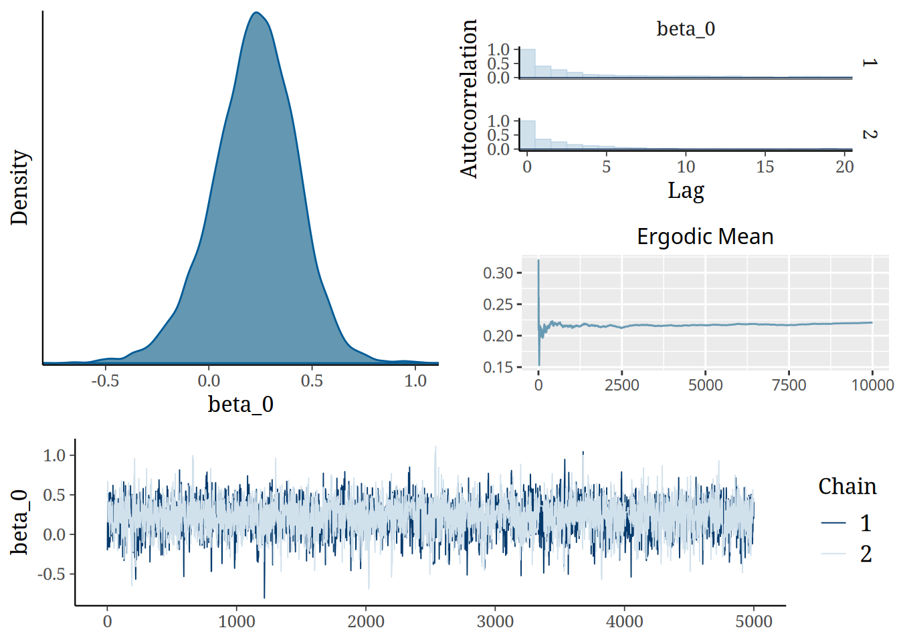
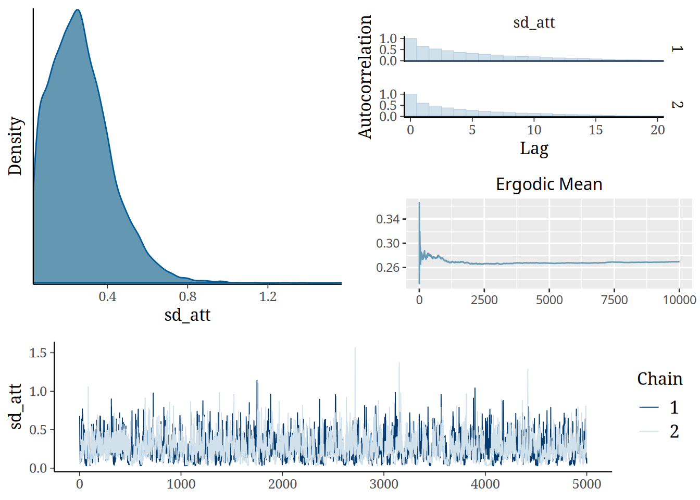
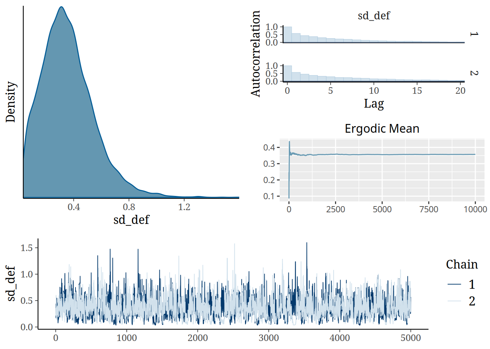
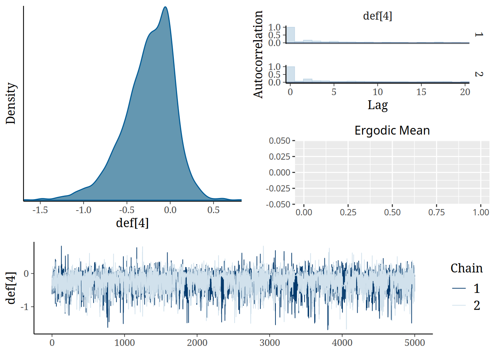

team_names <- c("Tombense", "Uberlândia", "Villa Nova", "Cruzeiro",
"Athletic", "Ipatinga", "Democrata", "Itabirito",
"Patrocinense", "Atlético-MG", "América-MG", "Pouso Alegre")Campeonato Mineiro
Registrando os Times
Tabela
Tombense 2 x 2 Uberlândia
Villa Nova 1 x 2 Cruzeiro
Athletic 2 x 1 Ipatinga
Democrata 1 x 3 Itabirito
Patrocinense 2 x 1 Atlético-MG
América-MG 6 x 0 Pouso Alegre
Cruzeiro 1 x 1 Athletic
Itabirito 0 x 2 Villa Nova
Atlético-MG 4 x 0 Democrata
Pouso Alegre 1 x 2 Tombense
Ipatinga 1 x 6 América-MG
Uberlândia 1 x 1 Patrocinense
Itabirito NA x NA América-MG
Ipatinga NA x NA Pouso Alegre
Uberlândia NA x NA Democrata
Tombense NA x NA Athletic
Atlético-MG NA x NA Cruzeiro
Patrocinense NA x NA Villa Nova
Pouso Alegre NA x NA Itabirito
Atlético-MG NA x NA Uberlândia
Democrata NA x NA Tombense
Villa Nova NA x NA Ipatinga
Athletic NA x NA Atlético-MG
Cruzeiro NA x NA Patrocinense
Pouso Alegre NA x NA Democrata
Uberlândia NA x NA Itabirito
Cruzeiro NA x NA América-MG
Patrocinense NA x NA Ipatinga
Villa Nova NA x NA Athletic
Atlético-MG NA x NA Tombense
Athletic NA x NA Pouso Alegre
Democrata NA x NA Cruzeiro
Ipatinga NA x NA Uberlândia
América-MG NA x NA Villa Nova
Itabirito NA x NA Atlético-MG
Tombense NA x NA Patrocinense
América-MG NA x NA Atlético-MG
Uberlândia NA x NA Athletic
Ipatinga NA x NA Democrata
Itabirito NA x NA Patrocinense
Villa Nova NA x NA Tombense
Pouso Alegre NA x NA Cruzeiro
Democrata NA x NA Villa Nova
Cruzeiro NA x NA Uberlândia
Athletic NA x NA Itabirito
Tombense NA x NA América-MG
Atlético-MG NA x NA Ipatinga
Patrocinense NA x NA Pouso Alegre
Ajustando um Modelo Poisson Simples
require(footstan)Loading required package: footstanpoisson_hyperparams <- list(
beta_0_mu = 0,
beta_0_sd = 10,
home_mu = 0,
home_sd = 10,
att_mu = 0,
def_mu = 0,
sd_att_mu = 0,
sd_att_sig = 2.5,
sd_def_mu = 0,
sd_def_sig = 2.5
)
games_clean <- games[complete.cases(games), ]
fit_poisson <- fit_data(games_clean, poisson_hyperparams, "poisson", iter=10000, chains=2)
SAMPLING FOR MODEL 'poisson' NOW (CHAIN 1).
Chain 1:
Chain 1: Gradient evaluation took 9e-06 seconds
Chain 1: 1000 transitions using 10 leapfrog steps per transition would take 0.09 seconds.
Chain 1: Adjust your expectations accordingly!
Chain 1:
Chain 1:
Chain 1: Iteration: 1 / 10000 [ 0%] (Warmup)
Chain 1: Iteration: 1000 / 10000 [ 10%] (Warmup)
Chain 1: Iteration: 2000 / 10000 [ 20%] (Warmup)
Chain 1: Iteration: 3000 / 10000 [ 30%] (Warmup)
Chain 1: Iteration: 4000 / 10000 [ 40%] (Warmup)
Chain 1: Iteration: 5000 / 10000 [ 50%] (Warmup)
Chain 1: Iteration: 5001 / 10000 [ 50%] (Sampling)
Chain 1: Iteration: 6000 / 10000 [ 60%] (Sampling)
Chain 1: Iteration: 7000 / 10000 [ 70%] (Sampling)
Chain 1: Iteration: 8000 / 10000 [ 80%] (Sampling)
Chain 1: Iteration: 9000 / 10000 [ 90%] (Sampling)
Chain 1: Iteration: 10000 / 10000 [100%] (Sampling)
Chain 1:
Chain 1: Elapsed Time: 0.469 seconds (Warm-up)
Chain 1: 0.465 seconds (Sampling)
Chain 1: 0.934 seconds (Total)
Chain 1:
SAMPLING FOR MODEL 'poisson' NOW (CHAIN 2).
Chain 2:
Chain 2: Gradient evaluation took 8e-06 seconds
Chain 2: 1000 transitions using 10 leapfrog steps per transition would take 0.08 seconds.
Chain 2: Adjust your expectations accordingly!
Chain 2:
Chain 2:
Chain 2: Iteration: 1 / 10000 [ 0%] (Warmup)
Chain 2: Iteration: 1000 / 10000 [ 10%] (Warmup)
Chain 2: Iteration: 2000 / 10000 [ 20%] (Warmup)
Chain 2: Iteration: 3000 / 10000 [ 30%] (Warmup)
Chain 2: Iteration: 4000 / 10000 [ 40%] (Warmup)
Chain 2: Iteration: 5000 / 10000 [ 50%] (Warmup)
Chain 2: Iteration: 5001 / 10000 [ 50%] (Sampling)
Chain 2: Iteration: 6000 / 10000 [ 60%] (Sampling)
Chain 2: Iteration: 7000 / 10000 [ 70%] (Sampling)
Chain 2: Iteration: 8000 / 10000 [ 80%] (Sampling)
Chain 2: Iteration: 9000 / 10000 [ 90%] (Sampling)
Chain 2: Iteration: 10000 / 10000 [100%] (Sampling)
Chain 2:
Chain 2: Elapsed Time: 0.389 seconds (Warm-up)
Chain 2: 0.387 seconds (Sampling)
Chain 2: 0.776 seconds (Total)
Chain 2: Warning: There were 12 divergent transitions after warmup. See
https://mc-stan.org/misc/warnings.html#divergent-transitions-after-warmup
to find out why this is a problem and how to eliminate them.Warning: Examine the pairs() plot to diagnose sampling problemsWarning: Bulk Effective Samples Size (ESS) is too low, indicating posterior means and medians may be unreliable.
Running the chains for more iterations may help. See
https://mc-stan.org/misc/warnings.html#bulk-essWarning: Tail Effective Samples Size (ESS) is too low, indicating posterior variances and tail quantiles may be unreliable.
Running the chains for more iterations may help. See
https://mc-stan.org/misc/warnings.html#tail-essVisualizando os parâmetros ajustados



Prevendo o Resultado para o Clássico
Efeitos do Cruzeiro
